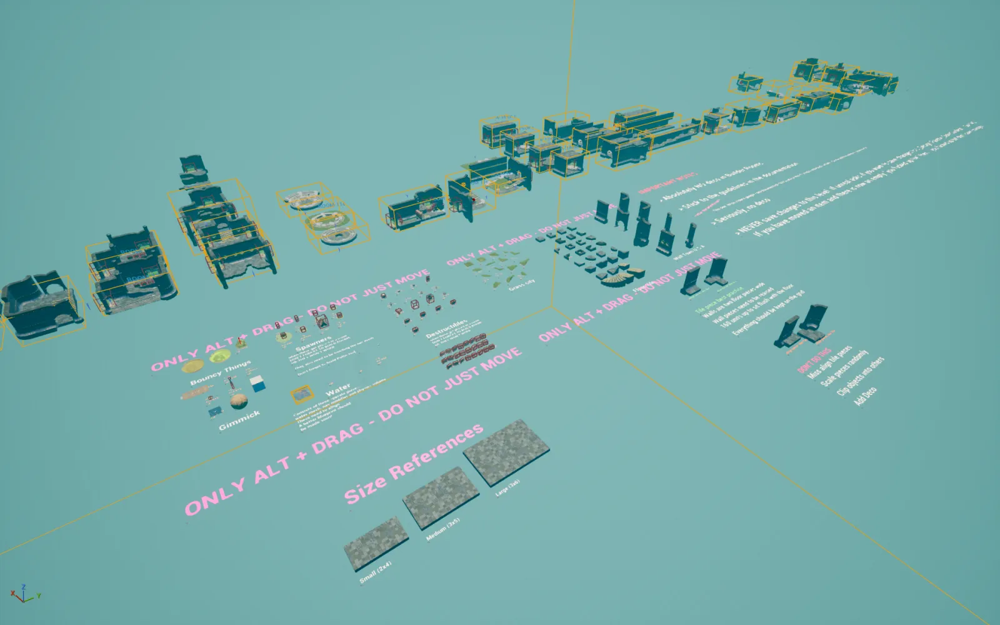
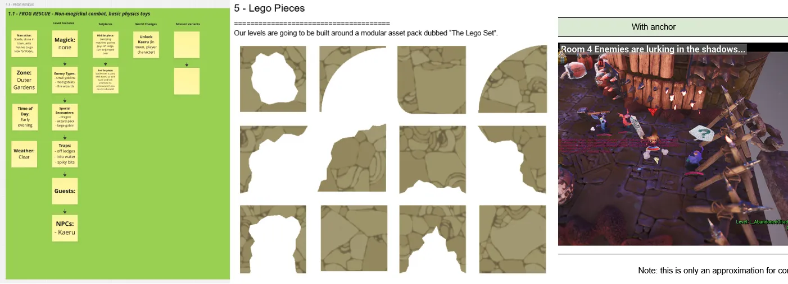

レベル
「Awaysis」には、25のレベルで構成されたキャンペーンモードがあります。また、パーティーゲームモードの「アリーナ」と「コート」にも、それぞれ専用のマップがあります。
これらのマップの大半は私が制作を担当しました。アートやエンジニアのリード、そして外部の協力会社とも積極的にコミュニケーションを取り、それぞれのコンテンツが仕様どおり、期限内に完成するようサポートしました。
このページでは概要をご紹介します。詳しくは、下記のレベル制作ガイドをご覧ください。
キャンペーン
「Awaysis」のレベルは、複数の部屋で構成された一本道のつくりです。標準的なレベルは約15部屋で、プレイ時間は約20分です。キャンペーンのミッションを制作するためのパイプラインを構築し、実際のコンテンツ制作も担当しました。上のオレンジ色の仮組み画面のように、各部屋は個別のパーツを組み合わせて作られています。
「Awaysis」では、まず部屋のライブラリを作り、そこからレベルを素早く組み立てる方法を取りました。これにより、スピードが求められるスケジュールにも対応できました。
部屋システムで大切にしたのは、モジュール化です。ブロックセットごとに異なる見た目を用意することで、部屋を効率よく再利用できました。
テストで評判の良かった部屋は、一部の区画を変えて見た目を新しくし、後半のレベルでアレンジして使うこともできました。

こちらは「ビルダーレベル」の舞台裏です。作業用のパレットを実際にレベル内に並べ、部屋ごとに個別に制作・派生・テストができるようにしていました。
アリーナ
プレイヤー同士で対戦するマルチプレイヤーモード向けの、気軽に楽しめるコンパクトな対戦アリーナです。
これらのマップ制作で大切にしたのは、すぐにテストして改善を繰り返すことです。定期的にプレイ会を開き、PvP向けのマップをその場で調整しながら開発しました。
コート
コートは、サッカーをモチーフにしたチーム対戦（PvP）モード用に制作しました。
チームモードでは、両チームにとって公平で、同じように見やすいマップにすることを特に重視しました。
パイプライン

「Awaysis」には唯一の専任レベルデザイナーとして参加しました。レベル制作のパイプライン、ツール、資料作成を担当したほか、外部の協力会社の受け入れや連携をサポートし、プロジェクトを期限内に完成させられるよう努めました。
資料
これほど大規模なプロジェクトでは、レベル制作のすべての工程をしっかりと考え、資料にまとめておくことが欠かせませんでした。
資料の例として、私が作成・管理していたドキュメントの一部を下記からご覧いただけます。
ツール
「Awaysis」の開発を支えるため、レベルデザイナー、アーティスト、エンジニアが使えるツールの制作も担当しました。
こちらは、Blutilityで制作したツールの一部です。
ビネットシステム
特に気に入っている開発効率化ツールが、ビネットシステムです。レベル内のアセットをひとつずつ手作業で配置すると時間がかかり、環境に変化が少なくなるため、繰り返し遊ぶ楽しさも損なわれがちです。
そこで、プロップを直接配置する代わりに、「ビネット」と呼ぶスポーン用のコンテナを配置する仕組みを作りました。ビネットは種類・サイズ・形状で分類できます。それに合わせて、種類に合い、サイズと形状の範囲に収まるプロップのグループ「コンポーネント」を制作します。実行時には、ビネットが使用可能なコンポーネントの中からランダムにひとつを選びます。
これにより、最初はビネットだけを配置しておき、仕上げの段階で余裕ができたらコンポーネントを追加していく、という進め方ができました。新しいコンポーネントをひとつ追加するだけで、ゲーム内のすべてのレベルに変化が生まれます。また、ゲームの進行度や季節イベント、DLCなどに合わせてコンポーネントを追加できるため、レベルを常に新鮮に保ち、拡張しやすくなっています。
スプラインカメラ
リードエンジニアと密に連携し、4人オンラインプレイに対応したスプラインカメラシステムを開発しました。カメラ用のスプラインとプレイヤー追従用のスプラインを使うことで、複雑で映画のようなカメラワークを設計できます。
E-Zフォルダー
レベル制作ガイドにもあるとおり、アウトライナーのフォルダ整理はレベル制作において重要な要素でした。開発を効率化するため、どのレベルでも自動で整理し、ルールに沿った状態にできる専用ツールを制作しました。
ツールは自分で制作しましたが、ブループリントを整理し、読みやすく保つことを常に重視していました。
角度ツール
スライディングが中心のゲームでは、地面の傾斜角度が重要な指標でした。こうした数値をすぐに測れるツールも、私が用意していた工夫のひとつです。
部屋の中の傾斜角度を把握できることは、開発においてさまざまなメリットがありました。特に、プレイヤーが滑る坂やジャンプ台を作る際に、結果を予測しながら調整できるようになりました。スライディングの速度、重心、飛び出すタイミングは、すべて坂やジャンプ台の傾斜によって決まるため、いつ何が起こるかを理解し、コントロールできました。
たとえば、スライディングの終わりにジャンプ台を置く場合、角度によってプレイヤーをゆるやかに滑り上がらせてから戻すこともできますし、角度を急にしてプレイヤーを高く打ち上げ、外へ飛び出させることもできます。
また、部屋の坂や滑り台の傾斜が急すぎると、AIのナビエージェントが移動できなくなることがあります。そのため、どこまで傾斜をつけられるかをひと目で確認できるのは、とても役立ちました。